As you navigate through the rest of your life, be open to collaboration. Other people and other people’s ideas are often better than your own. Find a group of people who challenge and inspire you, spend a lot of time with them, and it will change your life.
—Amy Poehler
What is a “user experience”? It’s the sum total of all of the interactions a user has with your product and service. It’s created by all of the decisions that you and your team make about your product or service: the way you price it, the way you package and sell it, the way you onboard users, the way you support it and maintain it and upgrade it, and so on and so on. In other words, it’s created by a team, not an individual user interface designer. For this reason, Lean UX begins with the idea that user experience design should be a collaborative process.
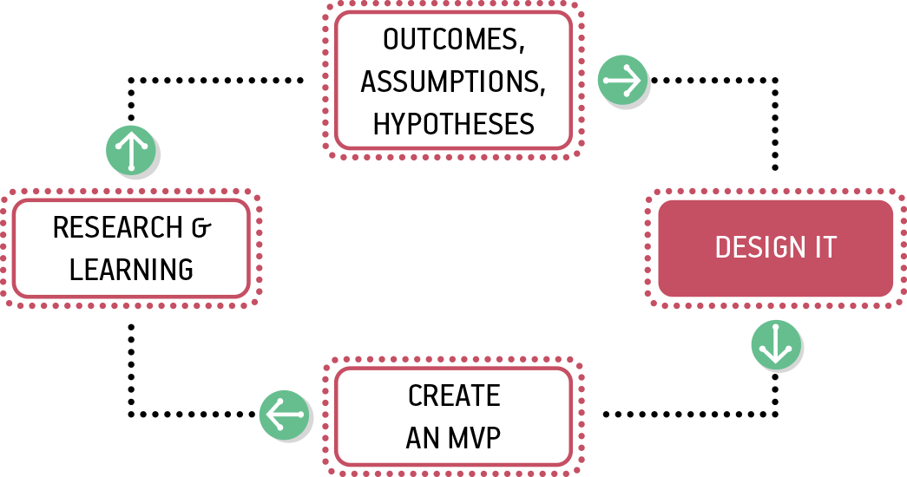
Lean UX brings designers and nondesigners together in co-creation. It yields ideas that are bigger and better than their individual contributors. But it’s not design-by-committee. It’s a process that is orchestrated and facilitated by designers, but one that’s executed by specialists working in their individual discipline who work from a common playbook you create together. Lean UX increases your team’s ownership over the work by providing an opportunity for individual points of view to be shared much earlier in the process.
In this chapter we’ll explore the many benefits that come from this close, cross-functional collaboration. Specifically, we’ll look at the following:
Why everybody gets to design
How low-fidelity artifacts increase collaboration
Building a shared understanding across your team
We’ll also look at a set of techniques that enable this more productive way of working:
Design Studio—a collaborative sketching exercise for the entire team
Design systems and style guides—living repositories of all the customer-facing elements of your product
Collaboration techniques for geographically distributed teams
Let’s dig in...
In Chapter 3, you learned about hypotheses. To test your hypotheses, you sometimes simply conduct research (described in Chapter 6). But other times, you need to design and build something that will help you to test these hypotheses. For example, if you’re in the early stage of a project, you might test demand by creating a landing page that will measure how many customers sign up for your service. Or if you’re later in the product lifecycle, you might be working at the feature level—adding some new functionality that will make users more productive, for example. Navigating the many possible design options for these features can be difficult for teams. How often have you experienced team conflict over design choices?
The most effective way we’ve found to rally a team around a design direction is through collaboration. Over the long haul, collaboration yields better results than hero-based design (the practice of calling in a designer or design team to drop in, come up with something beautiful, and take off to rescue the next project). Teams rarely learn or get better from working with heroes. Instead, in the same way that creating hypotheses together increases the Product IQ of the team, designing together increases the Design IQ of the team. It allows all of the members of the team to articulate their ideas. It gives designers a much broader set of ideas to draw upon as they refine the design. This, in turn, increases the entire team’s feelings of ownership in the work. Finally, collaborative design builds team-wide shared understanding. It is this shared understanding that is the currency of Lean UX. The more the team collectively understands, the less it has to document in order to move forward.
Collaborative design is an approach that allows a team to design together. It helps teams build a shared understanding of both the design problem and the solution. It provides the means for them to work together to decide which functionality and interface elements best implement the feature they want to create.
Collaborative design is still a designer-led activity. It’s the designer’s responsibility to not only call collaborative design meetings but to facilitate them, as well. Sometimes, you’ll have informal chats and sketching sessions. Sometimes, more structured one-on-one sessions with a developer at a whiteboard. Other times, you will gather the entire team for a Design Studio exercise. The key is to collaborate with a diverse group of team members.
In a typical collaborative design session, teams sketch together, critique the work as it emerges, and ultimately converge on a solution they feel has the greatest chance of success. The designer, while still producing designs, takes on the additional role of facilitator to lead the team through a series of exercises.
The output of these sessions typically consists of low-fidelity sketches and wireframes. This level of fidelity is important. First, it makes it possible for everyone to contribute, even team members with less sophisticated drawing skills. Second, it’s critical to maintaining the malleability of the work. This gives the team the ability to pivot quickly if their tests reveal that the approach isn’t working. It’s much easier to pivot from a failed approach if you haven’t spent too much time laboriously drawing, documenting, and detailing that approach.
A few years ago, Jeff was designing a dashboard for a web app targeted at TheLadders’ recruiter and employer audience. There was a lot of information to fit on one screen and he was struggling to make it all work. Instead of burning too much time at his desk pushing pixels, he grabbed a whiteboard and asked Greg, the lead developer, to join him. Jeff sketched his original idea about how to lay out all of the content and functionality for this dashboard (see Figure 4-2). The two of them then discussed the idea, and eventually Jeff handed Greg the marker. He sketched his ideas on the same whiteboard. They went back and forth, ultimately converging on a layout and flow that they felt was both usable and feasible, given that they needed to deliver a solution within the current two-week sprint. At the end of that two-hour session, they returned to their desks and began working. Jeff refined the sketch into a more formal wireframe and workflow while Greg began to write the infrastructure code necessary to get the data they needed to the presentation layer.
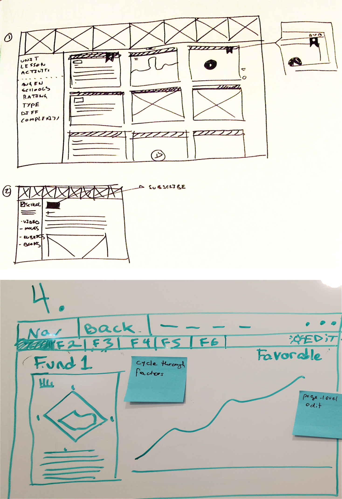
They had built a shared understanding through their collaborative design session. They both knew what they were going to build and what the feature needed to do. They didn’t need to wait to document it. This allowed them to get the first version of this idea built within a two-week time frame.
When your team is comfortable collaborating, informal sessions like the one we’ve just described take place all the time. But sometimes, you are going to need to gather everyone for a formal working session. Design Studio is a popular way to do this.1
This method, born in the architecture world where it was called Design Charrette, is a way to bring a cross-functional team together to visualize potential solutions to a design problem. It breaks down organizational silos and creates a forum for your fellow teammates’ points of view. By putting designers, developers, subject matter experts, product managers, business analysts, and other competencies together in the same space focused on the same challenge, you create an outcome far greater than working in silos allows. It has another benefit. It begins to build the trust your team will need to move from these formal sessions to more frequent and informal collaborations.
The technique described in the sections that follow is very specific; however, you should feel comfortable to run less or more formal Design Studios as your situation and timing warrants. The specifics of the ritual are not the point as much as the activity of solving problems with your colleagues and clients.
To run a Design Studio session, you’ll want to find a dedicated block of time within which you can bring the team together. You should plan on at least a three-hour block. You’ll want a room with tables that folks can gather around. The room should have good wall space, so you can post the work in progress to the walls as you go.
The process works best for a team of five to eight people. If you have more people, you can just create more teams and have the teams compare output at the end of the process. (Larger groups take a long time to get through the critique and feedback steps, so it’s important to split groups larger than about eight people into smaller teams who can each go through the following process in parallel, converging at the end.)
Pencils
Pens
Felt-tip markers or similar (multiple colors/thickness)
Highlighters (multiple colors)
Sketching templates (you can use preprinted one-up and six-up templates or you can use blank sheets of 11″ x 17″ [A3] paper divided into 6 boxes)
25″ x 30.5″ (A1) self-stick easel pads
Drafting dots (or any kind of small stickers)
The first step in Design Studio is to ensure that everyone is aware of the problem you are trying to solve, the assumptions you’ve declared, the users you are serving, the hypotheses you’ve generated, and the constraints within which you are working. This can be a formal presentation with slides or it can be a group discussion.
You’ll be working individually in this step. Give each member of the team a six-up template, which is a sheet of paper with six empty boxes on it, as depicted in Figure 4-3. You can make one by folding a blank sheet of 11″ x 17″ paper or make a preprinted template to hand to participants. (Some teams like to hand out small individual whiteboards to each participant. These are great because they’re easy to erase and tend to make people feel relaxed.)
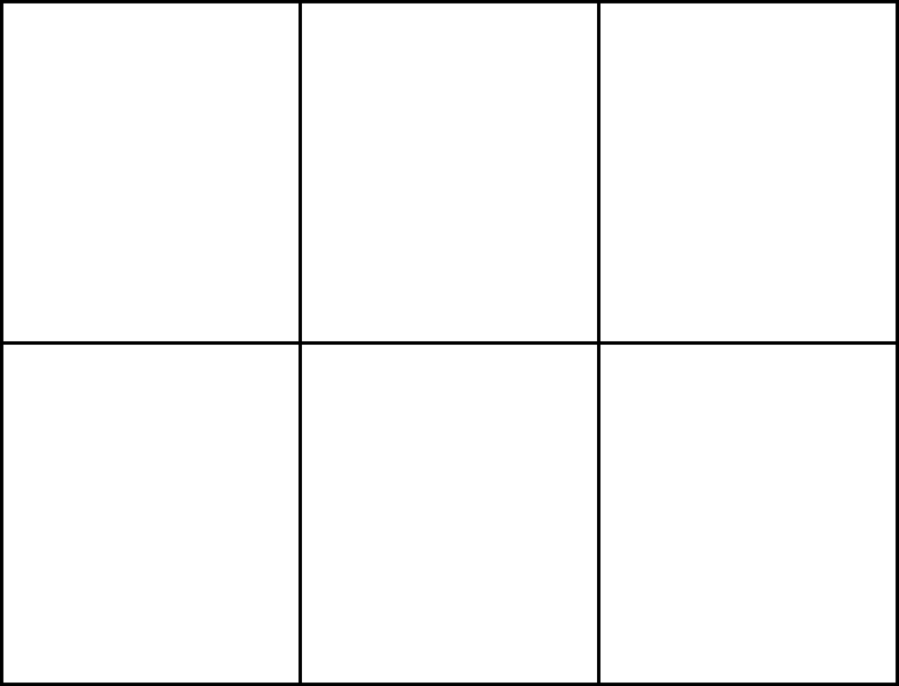
Sometimes, people find they have hard time facing a blank page. If that’s the case, try this optional step. Ask everyone to label each box on their sheets with one of your personas and the specific pain point or problem they will be addressing for that persona. Write the persona’s name and pain point at the top of each of the six boxes. You can write the same persona/pain point pair as many times as you have solutions for that problem or you can write a different persona/pain point combination for each box. Any combination works. Spend five minutes doing this.
Next, with your six-up sheets in front of you, give everyone five minutes to generate six, low-fidelity sketches of solutions (see Figure 4-4 and Figure 4-7) for each persona/problem pair on their six-up sheet. These should be visual articulations (UI sketches, workflows, diagrams, etc.) and not written words. Encourage your team by revealing the dirty secret of interaction design to level the playing field: If you can draw a circle, square, and a triangle, you can draw every interface. We’re confident everyone on your team can draw those shapes.
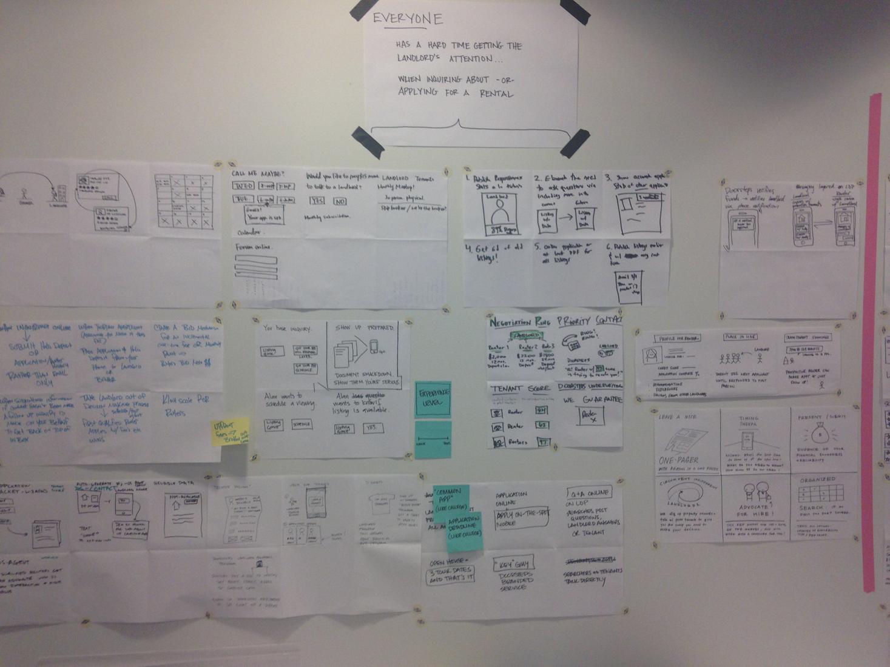
When time is up, share and critique what you’ve done so far. Going around the table, give the participants three minutes to hold up their sketches and present them to the team (Figure 4-5). Presenters should explicitly state who they were solving a problem for (in other words, what persona) and which pain point they were addressing, and then explain the sketch. Each member of the team should provide critique and feedback to the presenter. Team members should focus their feedback on clarifying the presenter’s intentions.
Giving good feedback is an art: In general, it’s better to ask questions than to share opinions. Questions help the team talk about what they’re doing, and help individuals think through their work. Opinions, on the other hand, can stop the conversation, inhibit collaboration, and put people on the defensive. So, when you’re providing critique, try to use questions like, “How does this feature address the persona’s specific problem?” Or, “I don’t understand that part of the drawing. Can you elaborate?” Questions like these are very helpful. Comments such as, “I don’t like that concept,” provide little value and don’t give the presenter concrete ideas to use for iterating.
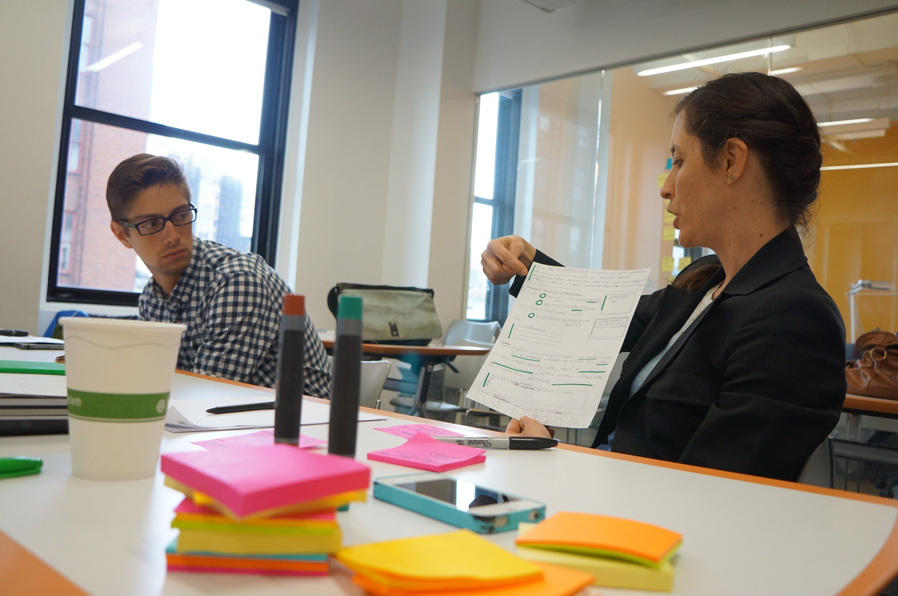
Make sure that every team member presents and receives critique.
Now ask everyone to pair up for the next round. (If two people at the table had similar ideas, it’s a good idea to ask them to work together.) Each pair will be working to revise their design ideas (Figure 4-6). The goal here is to pick the ideas that have the most merit and develop a more evolved, more integrated version of those ideas. Each pair will have to make some decisions about what to keep, what to change, and what to throw away. Resist the temptation here to create quick agreement by getting more general or abstract. In this step, you need to make some decisions and get more specific. Have each pair produce a single drawing on an 11″ x 17″ (A3) six-up sheet. Give each team 10 minutes for this step.
When the time is up, ask the team to go through the present-and-critique process again.
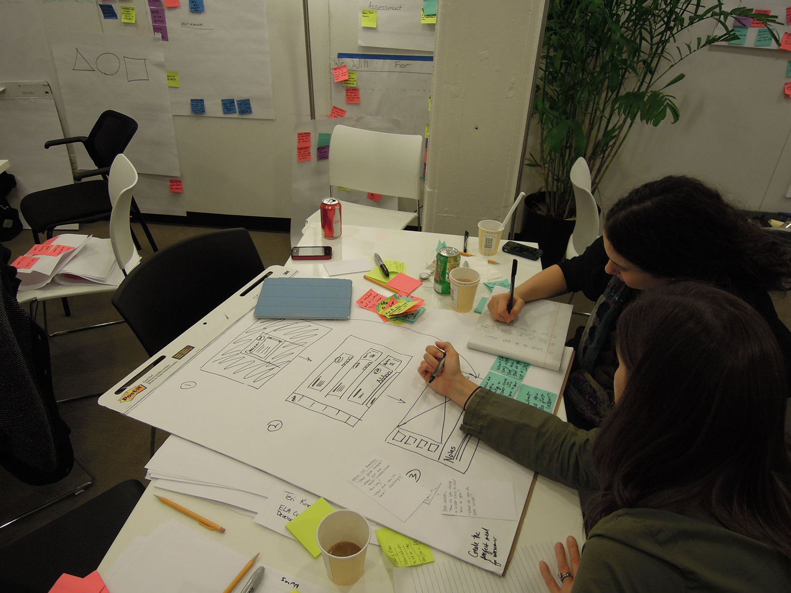
Now that all team members have feedback on their individual ideas and people have paired up to develop ideas further, the team must converge on one idea. In this step, the team is trying to select the ideas they feel have the best chance for success. This set of ideas will serve as the basis for the next step in the Lean UX process: creating an MVP and running experiments (both covered in the next chapter).
Ask the team to use a large sheet of self-stick easel pad paper or a whiteboard to sketch the components and workflow for their idea. There will be a lot of compromise and wrangling at this stage, and to get to consensus, the team will need to prioritize and pare back features. Encourage the team to create a “parking lot” for good ideas that don’t make the cut. This will make it easier to let go of ideas. Again, it’s important to make decisions here: resist the temptation to get consensus by generalizing or deferring decisions.
(If you have split a large group into multiple teams in the Design Studio, ask each team to present their final idea to the room when they are finished for one final round of critique and feedback, and if desired, convergence.)
Before you break, decide on next steps. You can use the designs you’ve created in this process as the basis for building MVPs, for running experiments, for production design and development—the process is very versatile. Just ensure that, having asked people to spend a lot of time contributing to the final design, you treat their contribution with respect. Decide together on next steps and then stay on top of the progress so that people keep their commitments and follow through.
To keep the output visible, post it on a design wall or another prominent place so that the team can refer back to it. Decide on what (if any) intermediate drawings people want to keep and display these alongside the final drawing, again so that team members can refer back to the ideas. Regardless of what you keep posted on the wall, it’s generally a good idea to photograph everything and keep it in an archive folder of some sort. You never know when you’ll want to go back to find something. It’s also a good idea to put a single person in charge of creating this archive. Creating some accountability will tend to ensure that the team keeps good records.
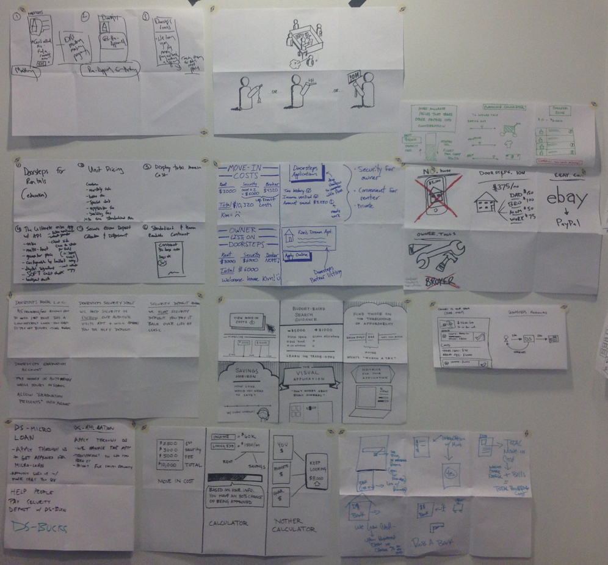
So far in this chapter, we’ve focused on the ways that teams can design together. In practice, this usually means that teams are sketching together, either on paper or at a whiteboard. It almost never means that teams are sitting together at a workstation moving pixels around. In fact, this kind of group hovering at the pixel level is what most designers would consider their worst nightmare. (To be clear: don’t do this.)
And yet, design isn’t done when the sketch is done. It’s not completed at the whiteboard. Instead, it’s usually just getting started. So how do we get design to the pixel level? How do we get to finished visual design?
Increasingly, we’re seeing teams turn to design systems. Design systems are like style guides on steroids. They were an emerging species when we completed the first edition of this book but have now become an accepted best practice for digital product teams. Large organizations like Westpac (see Figure 4-8) and GE use them. Technology-native companies like MailChimp and Medium and Salesforce and countless others use them, too. Even the US Federal Government has released a design system. There are even entire two-day conferences dedicated to them. But, before we get into why design systems are having their moment, let’s talk about what they are.
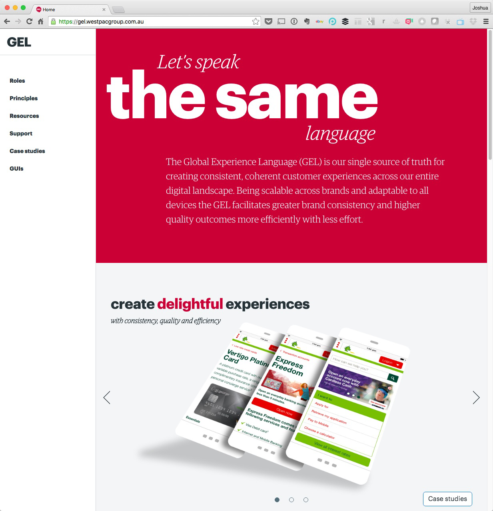
Style guides. Pattern libraries. Brand guidelines. Asset libraries. There’s not a lot of common language in this part of the design world, so let’s take a moment to clarify our terms.
For years, large organizations created brand guidelines—comprehensive documents of brand design and usage rules for those companies. In predigital days, these guidelines were documents, sometimes a few pages, but frequently large, comprehensive bound volumes. As the world moved online, these books sometimes moved onto the Web as PDF documents, web pages, or even wikis.
At the same time, publishers and publications often maintained style guides that covered rules of writing and content presentation. College students in the United States are familiar with the comforting strictness of The Chicago Manual of Style, The MLA Style Manual and Guide to Scholarly Publishing, and others.
The computing world’s version of a style guide is exemplified by Apple’s famous Human Interface Guidelines (HIG). The HIG is a comprehensive document that explains every component in Apple’s operating system, provides rules for using the components, and contains examples that demonstrate proper use of the components.
Finally, developers are familiar with asset libraries. These collections of reusable code elements are intended to make the developer’s job easier by providing tested, reusable code that’s easy to download from an always-current code repository.
As with many ideas in the digital world, digital design systems (which we’ll call design systems for the sake of brevity) are a kind of mash up of all of these ideas. A good design system contains comprehensive documentation of the elements of a design, rules and examples that govern the use of these elements, and crucially, contains the code and other assets that actually implement the design.
In practice, a design system functions as a single source of truth for the presentation layer of a product. Teams can sketch at the whiteboard and then quickly use the elements found in the design system to assemble a prototype or production-ready frontend.
Design systems are a powerful enabler of Lean UX. They allow the visual and microinteraction details of a design to be developed and maintained in parallel with the other decisions a team makes. So decisions like screen structure, process flow, information hierarchy—things that can be worked out at the whiteboard—can be handled by the right group of teammates, whereas things like color, type, and spacing can be handled by another (very likely overlapping) group of folks.
This has a couple of big benefits for teams:
It allows the team to design faster, because they’re not reinventing the wheel every time they design a screen.
It allows the team to prototype faster, because frontend developers are working from a kit of parts—they don’t need to recreate the elements of a solution each time, they can just go get the appropriate pieces out of the design system.
It also has some big benefits for organizations:
In 2012, GE opened GE Software in San Ramon, California. This new “Center of Excellence” (CoE) was designed to help GE improve its software game. A few years earlier, a strategic review helped the company to see just how central software had become to their business—measured in lines of code, GE was something like the 17th largest software company in the world. And yet they felt they were not treating software development with the focus it deserved.
San Ramon included a new team at GE: the GE Software User Experience Team. This small team at the heart of a giant company created their first design system in 2013 in order to scale the impact they could have. Indeed, with fewer than 50 designers to collaborate with more than 14,000 developers (inside an organization of more than 300,000 people), there was no way that this startup design team could grow quickly enough to have a meaningful effect at GE.
The team’s first design system, called IIDS, for the Industrial Internet Design System, was designed by a group of internal designers with the help of a small team from Frog Design, one of the leading design firms in the world. The team built the system on top of Bootstrap, the HTML/CSS framework created by Twitter. It proved incredibly successful. Within a few years it had been downloaded by internal developers more than 11,000 times and had been used to create hundreds of applications. It helped software teams across the company produce better looking, more consistent applications. And, perhaps just as important, it created a huge amount of visibility for the software team and the UX team at San Ramon.
With that success came some problems. To be sure, simply having a good UI kit doesn’t mean that a team can produce a well-designed product. Design systems don’t solve every design problem. And Bootstrap was showing its limits as a platform choice. It had helped the team achieve their first objectives: get something out quickly, provide broad coverage of UI elements, and create wide adoption by being easier to use than “roll-your-own” solutions. But Bootstrap was hard to maintain and update and was just too big for most needs.
In 2015, GE Software, having had great success as an internal service bureau, morphed into GE Digital, a revenue-generating business in its own right. Their first product was called Predix (Figure 4-9), a platform on top of which developers inside and outside of GE can build software for industrial applications. And with this change of strategy, the team realized they needed to rethink their design system. Whereas earlier the goal had been to provide broad coverage and broad adoption, the new design system would be driven by new needs: it needed to enable great Predix applications, which was a more focused problem than before. It needed to limit the number of UI choices rather than supporting every possible UI widget. It still needed to be easy to adopt and use—it was now intended for use by GE customers—but now it was imperative that it be easy to maintain, as well.
The design system team had by this time grown to about 15 people and included design technologists (frontend developers who are passionate about both design and code), interaction designers, graphic designers, a technical writer, and a product owner.
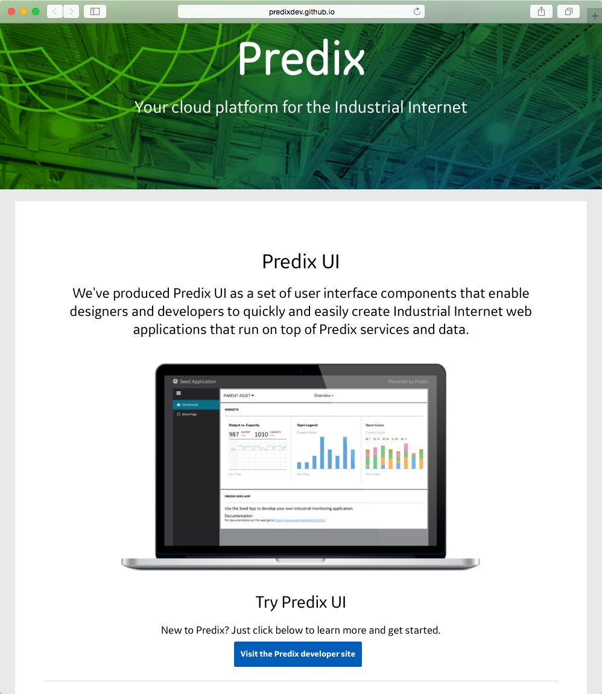
The team chose to move the design system to a new technology platform. No longer based on Bootstrap, the system has instead been created with Polymer, a JavaScript framework that allows the team to implement Web Components. Web Components has emerged in the last few years as a way to enable more mature frontend development practices.
To create the new design system, the team spent nearly six months prototyping. Significantly, the team did not work in isolation. Instead, they paired with one of the application teams, and thus were designing components to meet the needs of their users—in this case the designers and developers working on the application teams. This point is really important. Collaborative design takes many forms. Sometimes it means designing with your cross-functional team. Sometimes it means designing with your end users. In this instance, it was a hybrid: designing with a cross-functional team of designers and developers who actually are your users.
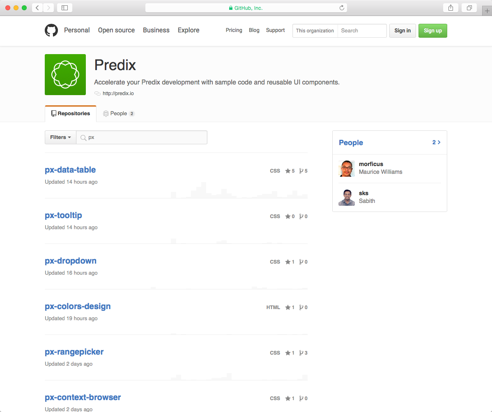
As the GE story illustrates, there’s more than one way to create a design system, and the choices you and your team make should be driven by the goals you have for the work and capabilities at your disposal. GE is a company with a large enough budget to hire excellent consultants to get the effort started, and the resources to create and dedicate a team to the effort. Is that realistic for your organization? And what goals must your design system support? Is widespread adoption important? Do you need broad coverage from day one or can you build the system over time? All of these questions will drive the approach you take. With that in mind though, here are some common themes to consider as you create your own design system.
Whether you are creating a full-blown design system or a more limited style guide, consider these important characteristics:
If it’s made of pixels, it goes into the design system. All interaction design elements should be defined and added to the design system. Use design patterns that work well in your existing product as the baseline of your design system. Form fields, labels, drop-down menus, radio button placement and behavior, Ajax and jQuery events, buttons—all of these should be included in the design system, as is illustrated in Figure 4-11, which shows the system for Salesforce.
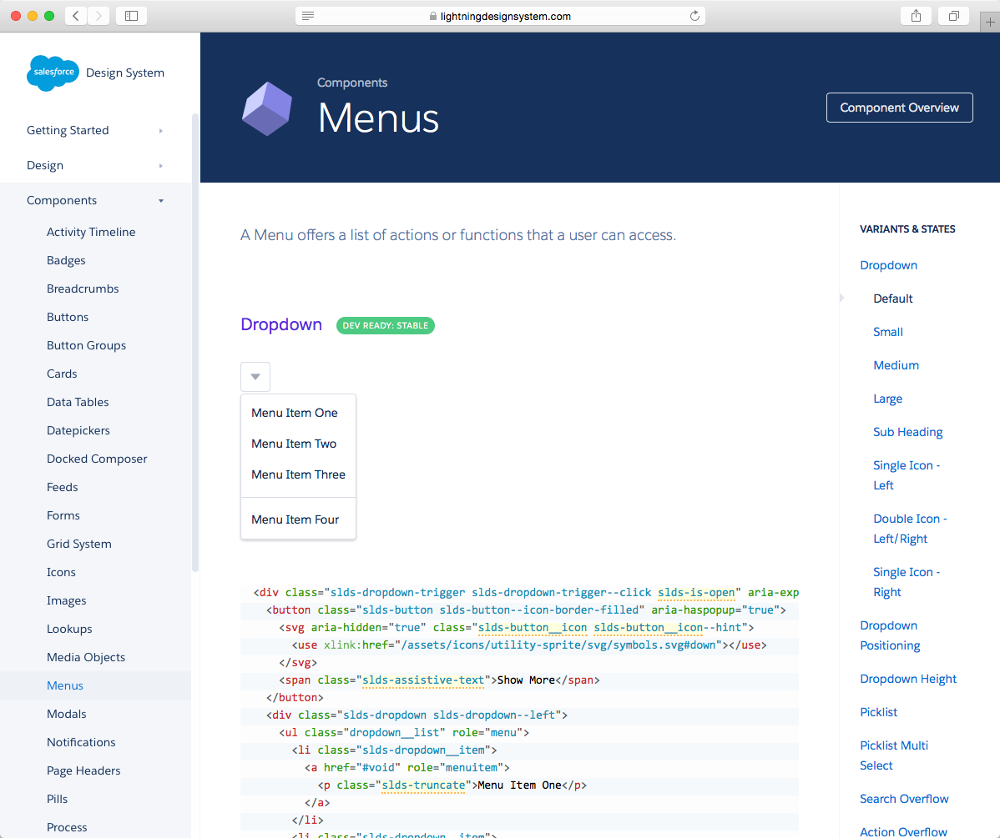
Provide three data points for each interaction design element (see Figure 4-12):
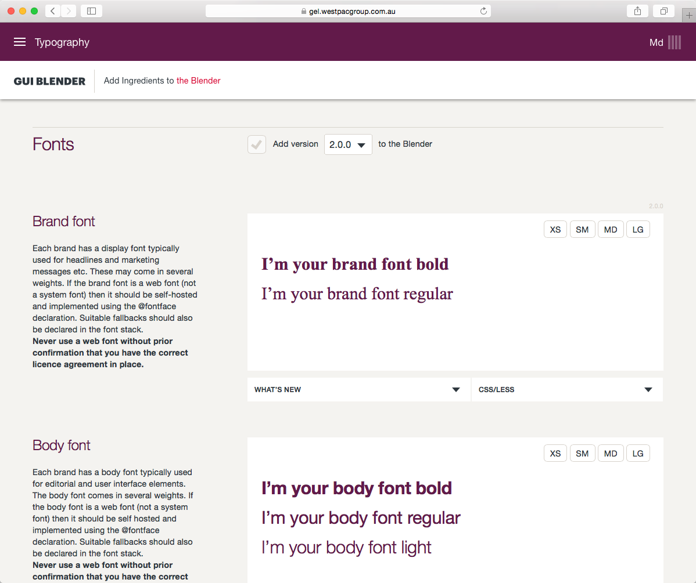
Next, include all visual design elements. Begin with the general color palette of your product. Ensure that each primary color is available with hex values along with complementary and secondary color choices. If certain elements, like buttons, for example, have different colors based on state, include this information in the description. Other elements to include here are logos, headers, footers, grid structures, and typographical choices (i.e., which fonts to use where and at what size/weight). The same attributes of what, where, and when provided for interaction design elements should also be provided here.
Finally, you need to codify copywriting styles, as well. Capture the tone of your brand, specific words you will and won’t use, grammatical choices, tolerated (and not) colloquialisms, along with button language (“OK,” “Yes,” “Go,” etc.) and other navigation language (previous/next, more/less, and so on).
Physical distance is one of the biggest challenges to strong collaboration. Some of the methods we’ve discussed in this chapter—especially Design Studio—become more difficult when a team isn’t all in the same location. But you still find ways to collaborate. Tools such as Skype, Google Hangouts, and Slack can provide teams with the means to collaborate in real time. Google Docs (including Google Draw) and purpose-built services like Mural.com allow teammates to collaborate on a document at the same time. Trello and wikis make it possible for teams to track information together. And a phone with a camera can make it easy to quickly share photos in an ad hoc way. All these tools can make cross-time-zone collaboration more effective and can help teams to feel virtually connected for long periods of time during the day.
Working on a geographically distributed team can make collaborative design more difficult. The benefits of collaboration are worth making the extra effort it takes to overcome the challenge of distance. Let’s take a look at how one team we worked with overcame a continent-wide separation and designed solutions together.
This team was spread into two groups in two cities: the product and user experience team was in New York and the development team was in Vancouver. Our goal was to run a Design Studio and affinity mapping session with the entire team.
We asked the two groups to gather in their individual conference rooms with their own laptops. Each conference room had a Mac in it with a location-specific Skype account (that is, it wasn’t a specific individual’s account—it was an “office” account). The two offices connected to each other via their office Skype accounts so that we could see each other as a group. This visual element was critical because it was the closest we could get to physically being in the same room.
We prepared a very brief (roughly 10 slides) setup presentation that explained the problem statement we were tackling. It included customer testimonials and data, and a very brief recap of our customers’ needs. The presentation also included the constraints of the solution space.
We kicked things off with an affinity mapping exercise. Typically, these are done by using sticky notes and a whiteboard. In this case, we used a shared Google Doc spreadsheet to conduct the exercise, as shown in Figure 4-13. We asked everyone in both offices to sign in to the shared spreadsheet. The spreadsheet itself had a column labeled for each person. Google Docs allows multiple editors to work in the same document. For this meeting, we had eight team members in the document at the same time!
We asked the team to come up with as many ideas as they could think of to solve the problem we presented. Each team member wrote one idea per cell in the column marked with that individual’s name. We gave the team five minutes to generate as many ideas as they could.
Next, to make sure everyone in each location was aware of all of the proposals, we asked the team members to read their ideas to the distributed team. Some ideas went by quickly, whereas others generated more discussion.
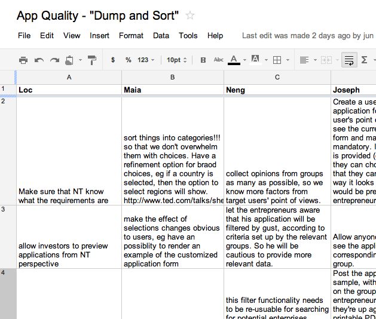
To simulate affinity grouping in the shared spreadsheet, one member of the team, serving as a facilitator, began a second sheet in the document using a personal laptop. The facilitator created some initial column headers in the second sheet that reflected recurring themes that emerged from discussion.
Then, we asked the team to group the ideas under the themes. Everyone moved their own ideas into the theme sheet, and people were free to add new themes if they felt their ideas didn’t fit into any of the existing themes. At the end of this process, we had created a spreadsheet filled with ideas that were sorted into themes. Some themes had just a pair of ideas; others had as many as eight.
To set up for the next step, a Design Studio session, we tried to mimic a colocated version of the activity as much as possible. We provided paper and pens at each location. We created a dual-monitor setup in each conference room so that each room would be able to see the sketches on one monitor while still being able to see their teammates via Skype on the second monitor, as shown in Figure 4-14. We asked each team to use a phone to photograph their sketches and email them to everyone else. This helped connect the dialog and the artifact to the conversation.
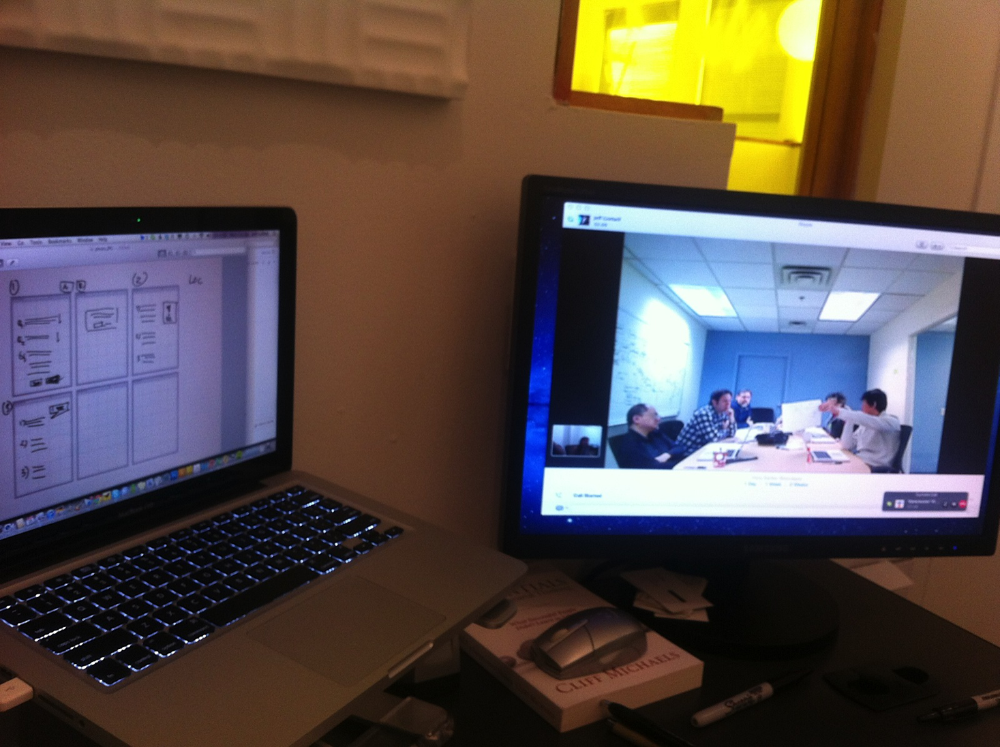
After that initial setup, we were able to proceed with the Design Studio process as normal. Team members were able to present their ideas to both rooms and to receive trans-continental critique. The two teams were able to refine their ideas together and were eventually able to converge on one idea to take forward.
Not every team will find that collaboration comes easily. Most of us begin our careers by developing our individual technical skills as designers, developers, and so on. And in many organizations, collaboration across disciplines is rare. So it’s no wonder that it can feel challenging.
One of the most powerful tools for improving collaboration is the Agile technique of the retrospective and the related practice of creating Team Working Agreements. Retrospectives are regularly scheduled meetings, usually held at the end of every sprint, in which the team takes an honest look back at the past sprint. They examine what went well, what went poorly, and what the team wants to improve. Usually, the team will select a few things to work on for the next sprint. We can think of no more powerful tool for improving collaboration than the regular practice of effective retrospectives.
A Team Working Agreement is a document that serves as a partner to the retrospective. It keeps track of how the team has chosen to work together. It’s a self-created, continuously updated rule book that the team agrees to follow. At each retrospective, the team should check in with their Working Agreement to see if they’re still following it and if they need to update it to include new agreements or remove old ones that no longer make sense.
Here’s an outline for what you should consider covering in your Team Working Agreements (we’ve made a copy of our favorite template available online at http://leanuxbook.com/links):
And, any additional agreements.
Collaborative design (Figure 4-15) is an evolution of the UX design process. In this chapter, we discussed how opening up the design process brings the entire team deeper into the project. We talked about how the low-fidelity drawings created in Design Studio sessions can help teams generate many ideas and then converge on a set that the entire team can get behind. We showed you practical techniques you can use to create shared understanding—the fundamental currency of Lean UX. Using tools like design systems, style guides, collaborative design sessions, Design Studio, and simple conversation, your team can build a shared understanding that allows them to move forward at a much faster pace than in traditional environments.
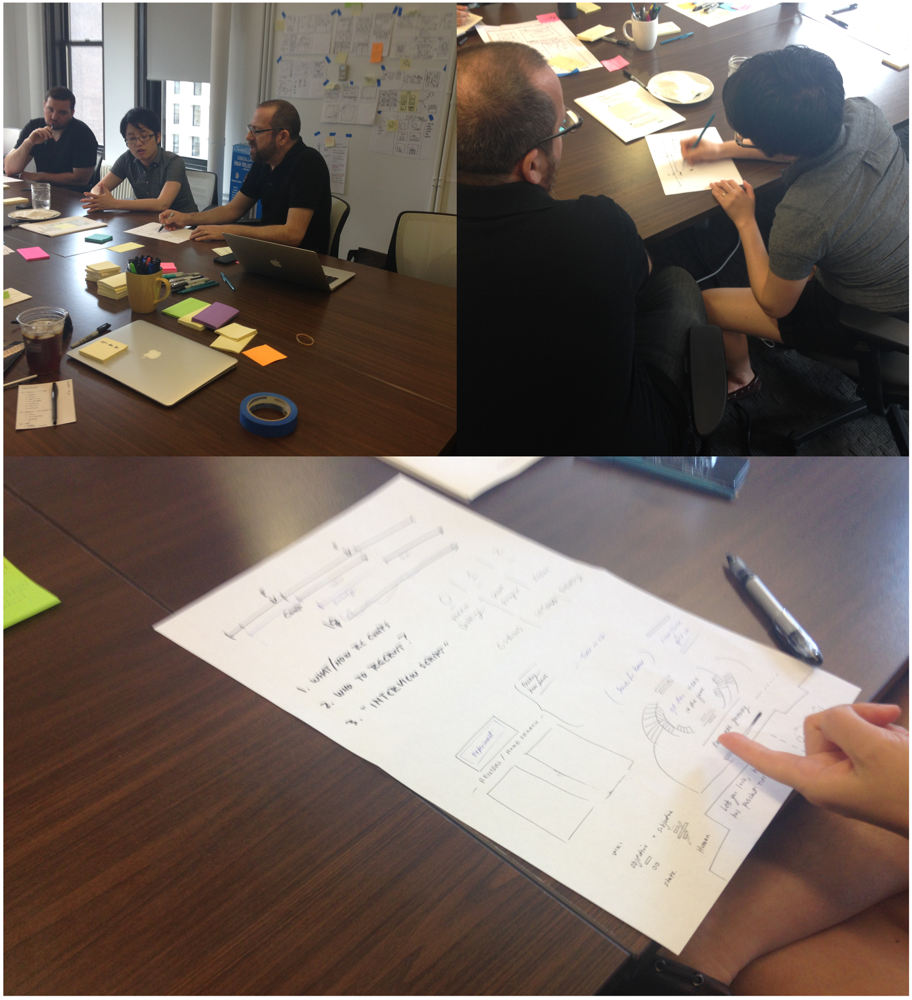
Now that we have all of our assumptions declared and our design hypotheses created, we can begin the learning process. In the next chapter, we cover the Minimum Viable Product and how to use it to plan experiments. We use those experiments to test the validity of our assumptions and decide how to move forward with our project.
1 In the years since we published the first edition of this book, the Design Studio method has become increasingly popular. There are now two comprehensive guides to the method. If you want to go deeper than our coverage, see Design Sprint by Banfield, Lombardo, and Wax and Sprint by Knapp, Zeratsky, and Kowitz.